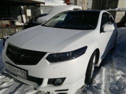

i
Модель, которую принято считать легендой автомобильного мира и есть - Honda Accord. В современном мире самым новым считается седьмое поколение Хонды Аккорд. Производители обновили бамперы автомобиля, немного усовершенствовали оптику. Продажа модели последнего поколения господствует с 2006 года. Цена не безупречный дизайн и восхитительное качество – большая, но чем только не пожертвуешь ради «королевы мира».

Технические характеристики:
Годы выпуска: 2008 .. 0
Тип кузова: седан
Количество дверей: 4
Количество мест: 5
Размеры (мм):
длина: 4726
ширина: 1840
высота: 1440
колёсная база: 2705
Топливо: бензин
Привод: передний
Количество передач (механика): 5
Передаточное отношение главной пары: 4.4
Объём багажника: 467
Расположение двигателя: спереди, поперечно
Объём двигателя (см3): 1998
Мощность двигателя (л.с.): 155
При оборотах (об/мин): 6000
Крутящий момент (Нм): 190/4500
Расположение цилиндров: рядно
Степень сжатия: 9.8
Передняя подвеска: независимая
Задняя подвеска: несколько рычагов и тяги
Передние тормоза: дисковые
Задние тормоза: дисковые
ABS: стандартная ABS
Усилитель руля: гидроусилитель
Тип рулевого управления: шестерня-рейка
Объём топливного бака (л): 65
Время разгона до 100 км/ч (сек.): 10.9
Максимальная скорость (км/ч): 212
Расход топлива на шоссе (л): 6.00
Расход топлива по городу (л): 10.40
Расход топлива смешанный цикл (л): 7.70
Снаряжённая масса (кг): 1544
Допустимая полная масса (кг): 1960
Размер шин: 205/60R16